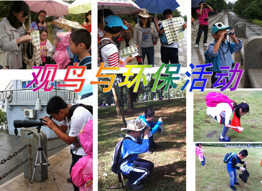
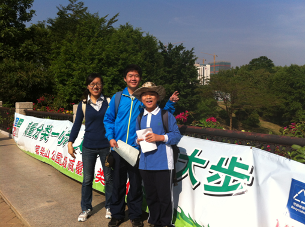
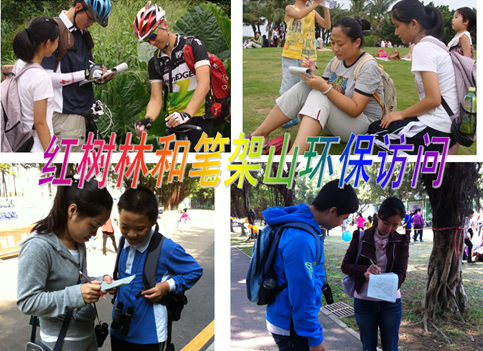
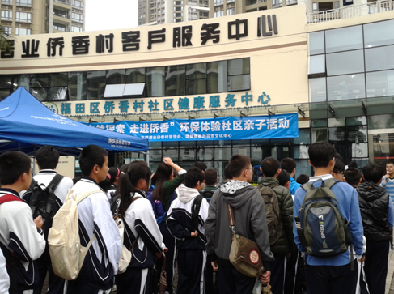
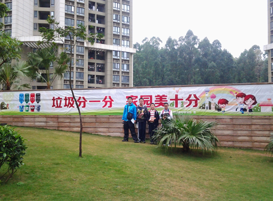
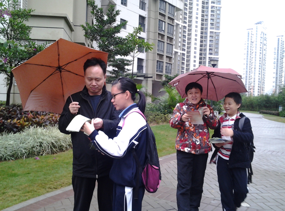
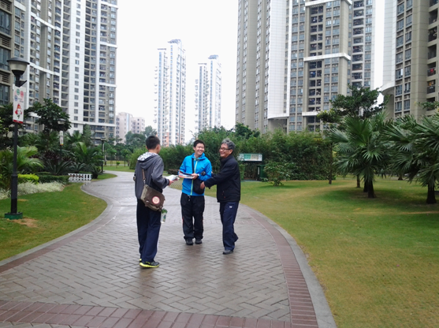
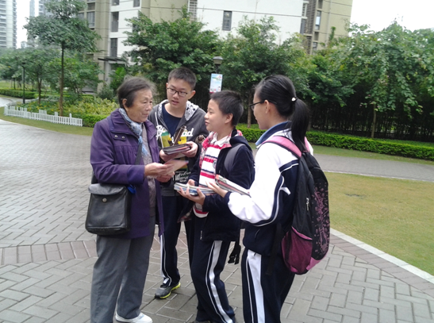
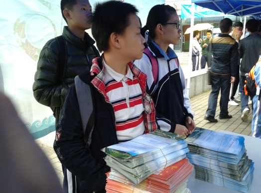
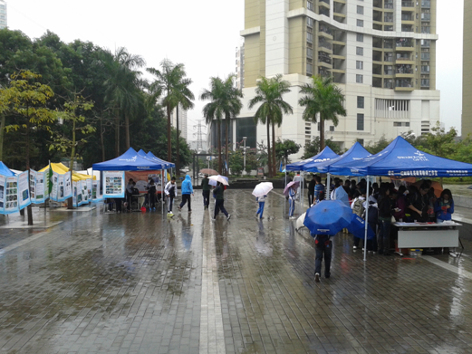

莲花中学南校区创新社团师生近期组织、参与多次公益环保活动
一、2013年10月-11月带领临近学校的小学生在红树林、笔架山进行观鸟研习、环保调查和宣传，以及捡垃圾活动

二、2013年11月-12月采访红树林和笔架山的游客们，进行环保意识的调查和垃圾分类、绿色出行等环保知识的宣传普及工作。

三、2013年12月15日在侨香村进行环保公益宣传，加入深圳市中小学环保志愿者队伍（游云工作室组织）：
